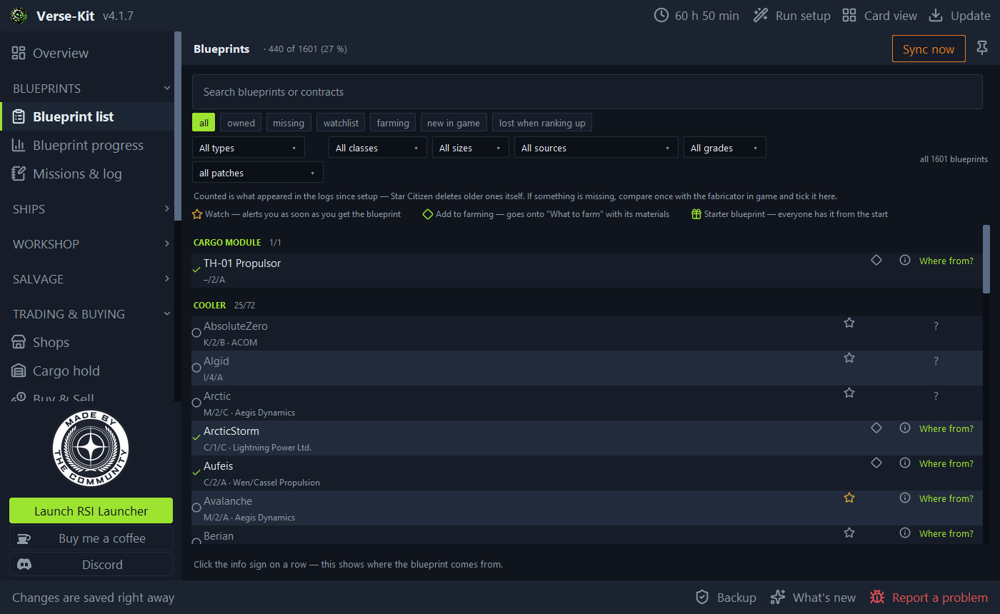

Blueprint tracker: new blueprints in seconds
Unlock a blueprint and it is in the list at once. VerseKit reads the game's own logs, without touching the game itself.
The overlay shows it right on top of the game: a narrow window, always on top, and it can let clicks pass through.